PoWatch · Generated documentation
Every route in PoWatch mapped against every principal that can exist, in every environment — derived from the authorization metadata, authentication schemes and feature flags in the source, not from intent. Includes an explicit list of the endpoints that carry no authorization check.
PoWatch has exactly two levels of access: signed in and not signed in. There are no roles — no admin, no supervisor, no read-only. Anyone who can sign in can do everything, including deleting all data where that switch is left on.

authz_flow_verybasic.svgIf a developer adds a new route and forgets to protect it, it is still protected. The framework denies anything that does not explicitly opt out.
The "Continue as Guest" path is blocked three separate ways in production — the flag, an environment check, and a startup exception. It is not one switch away from being live.
/diag and /diag/boot answer anyone, in any environment. The values are masked, but they confirm the environment name, storage state and boot progress to a stranger.
| Principal | How it is obtained | Scheme | Exists in |
|---|---|---|---|
| Anonymous | No credential | — | All environments |
| Entra user | GET /auth/login/microsoft → OIDC code + PKCE → cookie | Cookies (OIDC signs into it) | Any environment with AzureAd:ClientId configured |
| Guest (cookie) | GET /auth/login/fake?user=&roles= → direct SignInAsync | Cookies | Development, Test — 404 in Production |
| FakeAuth (header) | X-Fake-User / X-Fake-Roles request headers | FakeAuth | Development, Test — the scheme is not registered in Production, and registering it there throws at startup |
| Machine probe | No credential; App Service health probe, CI deploy gate, curl | — | All environments |
| Setting | Development | Test | Production |
|---|---|---|---|
DeveloperBypassAuth | true | true | false |
DeveloperEnableMicrosoftLogin | true | unset (false) | false |
AllowDataReset | true | true | false |
ExposeDebugDetailsInUi | true | true | false |
EnableKeyVault | true | false | false by default |
FhirExportEnabled | true — base configuration, not overridden anywhere | ||
HandoffCoachEnabled / DriftRadarEnabled | true — base configuration | ||
| FakeAuth scheme registered | yes | yes | no — startup throws if attempted |

authz_flow_basic.svgApplied by every .RequireAuthorization(). Requires an authenticated user. Accepts the cookie scheme, plus FakeAuth only when the dev bypass is on.
Applied to any endpoint that declares nothing. Cookie only — FakeAuth is deliberately excluded so an always-succeeds guest cannot auto-authenticate anonymous endpoints such as /auth/me.
After authorization succeeds, flags can still refuse: FHIR and Handoff Coach and Drift Radar return 503; the storage reset returns 404, so its existence is not confirmed to a caller.
| Route | Why it is anonymous | Assessment |
|---|---|---|
GET /auth/me | Must report the anonymous state before sign-in | Required |
GET /auth/config | The login page must know which buttons to render | Required |
GET /auth/login/microsoft | Sign-in cannot require prior sign-in | Required |
GET /auth/login/fake | Same; 404 unless dev bypass is on and the environment is not Production | Required, correctly fenced |
POST /auth/logout | Signing out an already-expired session must not 401 | Required |
Static assets incl. /_framework/* | The runtime that renders /login must load first | Required |
MapFallbackToFile("index.html") | The SPA host page must load for signed-out users | Required |
GET /health | App Service probe and CI deploy gate read it unauthenticated | Justified — but it enumerates dependency names and statuses |
GET /diag | Operator diagnosis without a session | Flagged |
GET /diag/boot | Answer "why did it not come ready?" when the app is degraded | Flagged |
Role claims are minted in two places — the roles query parameter on /auth/login/fake and the X-Fake-Roles header on the FakeAuth scheme — and they are surfaced to the client in AuthStateDto.Roles. But a repository-wide search finds no RequireRole, no policy with a role requirement, no [Authorize(Roles = …)] and no <AuthorizeView Roles="…">. Every one of the four client [Authorize] attributes and all three <AuthorizeView> blocks are bare.
Consequence: every authenticated principal has identical authority. A guest signed in with ?roles=ReadOnly can rename subjects, merge identities and — where the flag permits — delete all stored data. This is why the role columns in the Complete matrix collapse by default: they carry no information.
GET /diag is unauthenticated in ProductionReturns a diagnostics snapshot: masked endpoint, masked API key, storage connection status, CPU load and memory. The masking is real, but the endpoint still confirms to an unauthenticated caller that the host is a PoWatch instance, whether its storage is reachable, and how loaded it is. It duplicates GET /api/diagnostics/status, which is protected — the same data behind two different postures.
GET /diag/boot is unauthenticated in ProductionReturns the environment name, the last startup milestone reached and per-dependency readiness, and answers 503 when unhealthy. Keeping it dependency-light and anonymous is a deliberate operational choice with a real justification; it is also unauthenticated infrastructure reconnaissance. Restricting it by network rule rather than by policy would preserve the operational value.
POST /api/blobs/integrity signs arbitrary pathsAuthenticated, but it accepts a caller-chosen array of blob paths and returns a signed read URL for each with no ownership or prefix check. Any signed-in user can request a SAS for any path in the container.
/openapi/v1.json and /scalar/v1 declare no authorization metadata, so the fallback policy protects them. The outcome is right; the intent is invisible. An explicit .RequireAuthorization() would make it auditable and would survive a future change to the fallback policy.
IsProduction() check on the endpoint, and a startup InvalidOperationException if the scheme is ever registered in Production.SafeLocalUrl accepts only same-site absolute paths and rejects protocol-relative //host forms.SameSite=Strict, Secure=Always, encrypted with a durable shared Data Protection keyring.AzureAd:AllowedTenants when a list is supplied.Rows are code-derived routes; columns are principals. Pick an environment to re-evaluate every cell against that environment's flags and registered schemes. Columns that carry no distinct authority — every role column, because no role is ever checked — collapse automatically.

authz_flow_complete.svgTwelve endpoints carry AllowAnonymous or are served by an anonymous static-asset mapping. Nine are structurally required; three are judgement calls.
| Route | Declared as | Discloses | Verdict |
|---|---|---|---|
GET /auth/me | group .AllowAnonymous() | Whether the caller is signed in, and their own name/email/roles | Required — reports the anonymous state by design; reveals nothing about other users |
GET /auth/config | group .AllowAnonymous() | Whether Microsoft and guest sign-in are enabled, and the environment name | Required, mild leak — the environment name is echoed to anyone |
GET /auth/login/microsoft | group .AllowAnonymous() | Whether a client id is configured (404 when not) | Required |
GET /auth/login/fake | group .AllowAnonymous() | Nothing in Production — hard 404 | Required, triple-fenced |
POST /auth/logout | group .AllowAnonymous() | Nothing | Required |
GET /health | .AllowAnonymous() | Overall status, the name and status of each registered check, and per-check duration | Justified — the probe and deploy gate contract. Dependency names leak; values do not. |
GET /diag | .AllowAnonymous() | Masked endpoint, masked API key, storage connection status, CPU load, memory | Flagged — duplicates the protected /api/diagnostics/status |
GET /diag/boot | .AllowAnonymous() | Environment name, last boot milestone, storage configured/ready, Key Vault enabled and whether a URI is set | Flagged — restrict by network rule rather than removing it |
GET /_framework/* | MapStaticAssets().AllowAnonymous() | Client assemblies — which are shipped to every user anyway | Required — see the Architecture Report |
GET /css/*, /js/*, /lib/* | MapStaticAssets().AllowAnonymous() | Client code | Required |
GET /appsettings.json (client) | MapStaticAssets().AllowAnonymous() | Client feature flags: UseMockAi, polling interval, MaxInferenceTokens, EnableHud, ExposeDebugDetailsInUi | Structural — harmless today, but anything added here is world-readable |
GET / and unmatched paths | MapFallbackToFile("index.html").AllowAnonymous() | The SPA host page | Required |
The roles below are the ones the codebase can actually mint. The matrix is deliberately uniform — that uniformity is the finding.
| Capability | Anonymous | Any authenticated user | Role Admin | Role Nurse | Role Supervisor |
|---|---|---|---|---|---|
| Read the live board and timeline | No | Yes | Same | Same | Same |
| Ingest observations | No | Yes | Same | Same | Same |
| Rename and merge subject identities | No | Yes | Same | Same | Same |
| Generate handoff briefs and PDFs | No | Yes | Same | Same | Same |
| Mint blob SAS URLs (read and upload) | No | Yes | Same | Same | Same |
| Export clinical data over FHIR | No | Yes | Same | Same | Same |
| Read the diagnostics snapshot | Yes, via /diag | Yes | Same | Same | Same |
| Delete all observations, subjects and blobs | No | Yes where AllowDataReset is on | Same | Same | Same |
openid profile email and does not map app roles, so a real Entra principal arrives with no role claims at all. Only the dev/test paths can mint them today./merge, PATCH /subjects, /reset) are the natural first candidates.[Authorize] attributes and three <AuthorizeView> blocks would need Roles, remembering that client guards are cosmetic — the server guard is the control.